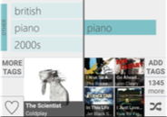

TagFlip: Active Mobile Music Discovery with Social Tags

Venue. IUI (2016)
Authors. Mohsen Kamalzadeh, Christoph Kralj, Torsten Möller, Michael Sedlmair
Abstract. We report on the design and evaluation of TagFlip, a novel interface for active music discovery based on social tags of music. The tool, which was built for phone-sized screens, couples high user control on the recommended music with minimal interaction effort. Contrary to conventional recommenders, which only allow the specification of seed attributes and the subsequent like/dislike of songs, we put the users in the centre of the recommendation process. With a library of 100,000 songs, TagFlip describes each played song to the user through its most popular tags on Last.fm and allows the user to easily specify which of the tags should be considered for the next song, or the next stream of songs. In a lab user study where we compared it to Spotify's mobile application, TagFlip came out on top in both subjective user experience (control, transparency, and trust) and our objective measure of number of interactions per liked song. Our users found TagFlip to be an important complementary experience to that of Spotify, enabling more active and directed discovery sessions as opposed to the mostly passive experience that traditional recommenders offer.